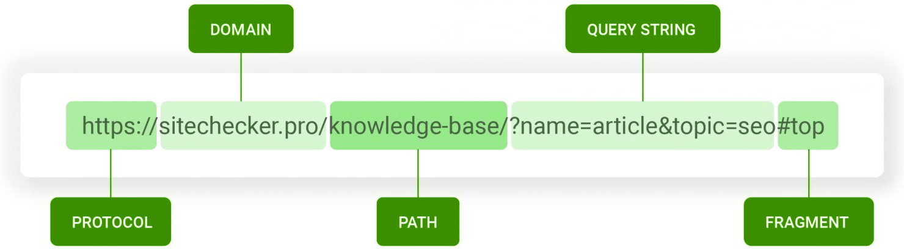

Clients & Servers
Request vs Response. Browsers are doing the requesting for information on behalf of the client, while the server is responding with the data.
Structure of a URL

DNS, IP
The DNS is a way to Translate TCP & IP addresses into human-readable language.
HTTP, Packets
When your browser makes a request, it uses a specific type of protocol (HTTPS) to make that request to the server. Both the request to and response from a server are sent in the form of packets, which are just smaller chunks of data. The internet handles data this way so that we can handle it more efficiently by using multiple available pathways to transfer different parts of data simultaneously, and also as a means of preserving data integrity in case there are some pieces of data that are missing or corrupted. There can be small pieces of redundancy between packets so that the data can be recovered.